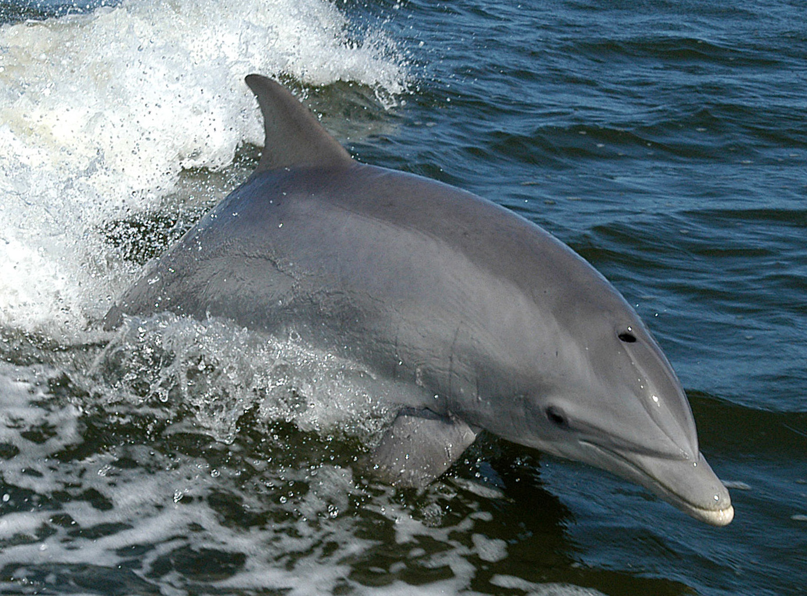
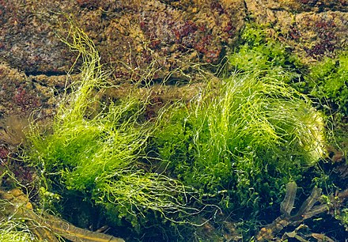

Specii caracteristice ale Mării Negre
Marea Neagră este un ecosistem complex și fascinant, care adăpostește o diversitate impresionantă de viețuitoare marine. Fiind o mare semi-închisă, conectată la Oceanul Planetar prin Strâmtoarea Bosfor și Strâmtoarea Dardanele, aceasta are caracteristici unice care influențează biodiversitatea sa. Salinitatea relativ scăzută, stratificarea apei și prezența unui strat anoxic la adâncimi mari creează un mediu de viață special, în care anumite specii s-au adaptat perfect.
De-a lungul timpului, apele Mării Negre au fost locuite de numeroase specii de pești, mamifere marine, alge și nevertebrate, fiecare având un rol esențial în menținerea echilibrului ecologic. Unele dintre acestea sunt endemice, trăind doar în acest mediu, în timp ce altele sunt specii migratoare, care vin aici pentru hrană sau reproducere.
De-a lungul timpului, apele Mării Negre au fost locuite de numeroase specii de pești, mamifere marine, alge și nevertebrate, fiecare având un rol esențial în menținerea echilibrului ecologic. Unele dintre acestea sunt endemice, trăind doar în acest mediu, în timp ce altele sunt specii migratoare, care vin aici pentru hrană sau reproducere.
•Delfinii din Marea Neagră
În apele Mării Negre trăiesc trei specii de delfini:
- Delfinul comun cu cioc scurt (Delphinus delphis)
- O specie agilă, cu un colorit distinctiv și un comportament jucăuș.
- Este adesea observat în grupuri, apropiindu-se uneori de ambarcațiuni.
- Delfinul mare (Tursiops truncatus)
- Cunoscut și ca delfinul afalin, este cea mai mare specie de delfin din Marea Neagră, recunoscut pentru inteligența sa..
- Marsuinul (Phocoena phocoena)
- O specie mai timidă, de dimensiuni mai mici, care preferă zonele mai puțin adânci.

Toate cele trei specii sunt protejate prin legislația internațională, din cauza amenințărilor precum poluarea și capturile accidentale în plasele de pescuit.
•Pești importanți
- Sturionul (Acipenser spp.)
- Una dintre cele mai valoroase specii de pești din Marea Neagră, cunoscută pentru icrele sale (caviarul). Din cauza pescuitului excesiv, sturionii sunt protejați, iar capturarea lor este restricționată.
- Hamsia (Engraulis encrasicolus ponticus)
- Un pește mic, esențial pentru industria pescuitului. Hamsia este consumată frecvent în regiunile de coastă și reprezintă o parte importantă a lanțului trofic marin..
- Scrumbia de Dunăre (Alosa immaculata)
- Un pește migrator care își petrece o parte din viață în Marea Neagră și urcă pe Dunăre pentru reproducere.
•Alge specifice Mării Negre
- Alga roșie Phyllophora
- O algă importantă pentru ecosistem, utilizată și în industria farmaceutică.
- Enteromorpha (alga verde)
- Se găsește în apele de mică adâncime și contribuie la echilibrul ecologic al mării.
- Cystoseira barbata
- O algă brună care ajută la filtrarea apei și oferă adăpost multor specii marine.

Concluzii
Aceste specii sunt esențiale pentru echilibrul ecosistemului marin din Marea Neagră și necesită măsuri de protecție pentru a preveni degradarea habitatului lor natural.